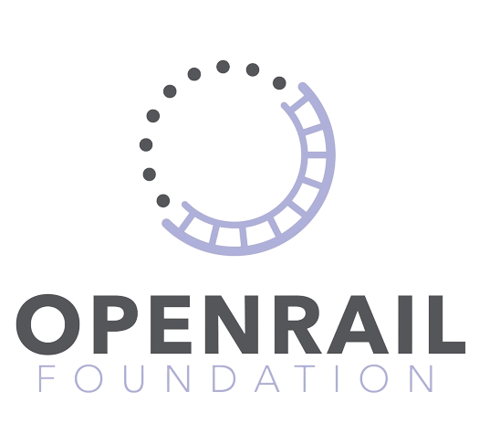

OSRD est placé sous l'égide d'OpenRail, une fondation open source dédiée au ferroviaire. Ensemble, avec des acteurs essentiels du secteur, nous avons créé une fondation open source dédiée au ferroviaire. OSRD sera le premier projet hébergé par la fondation OpenRail. L'initiative de la Fondation OpenRail vise à créer un espace d'innovation ouvert, autonome et collaboratif. Sa mission est de promouvoir le développement de projets de logiciels libres dans le secteur ferroviaire, comme cela existe déjà dans de nombreux autres secteurs industriels comme les télécommunications, l'automobile, l'énergie, ... Résolvons les problèmes ensemble !
